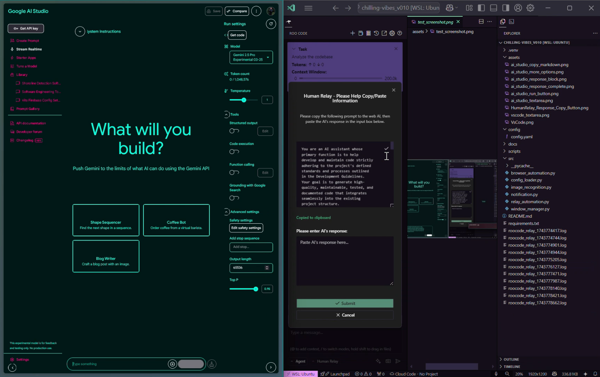

Multi-modal UI detection
Image templates first, OCR as fallback, pixel-colour heuristics as last resort. Resilient to UI drift.
A developer utility
Chilling-Vibes watches RooCode's Human Relay dialog in VS Code, relays each prompt to Google AI Studio, waits for the response, and feeds it back — so you don't have to babysit the tab.

Why
RooCode's Human Relay dialog asks you to copy its prompt into AI Studio, run the model, and paste the markdown back. Manually. Repeatedly. Chilling-Vibes does all of that for you — detecting the UI, switching windows, clicking the right buttons, waiting on the response, and feeding it back into the editor.
How it works
Focuses VS Code, finds the Copy button in the Human Relay dialog via image templates, OCR, or pixel heuristics, and reads the prompt off the clipboard.
Switches to your browser — or drives it directly via Selenium or Playwright — pastes the prompt into AI Studio, clicks Run, and waits for the response to complete.
Extracts the markdown response, switches back to VS Code, pastes it into the relay textarea, and submits. Then starts the next iteration.
Features
Image templates first, OCR as fallback, pixel-colour heuristics as last resort. Resilient to UI drift.
Swap the UI scraper for Selenium or Playwright when you want speed and reliability over portability.
Ctrl+Alt+P pauses or resumes the loop from anywhere — notifications confirm the state change.
Configurable max retries and exponential delays ride out transient detection failures without derailing the run.
Windows and Linux desktop toasts, with a console fallback when win10toast or notify-send aren't available.
Timeouts, confidence, window titles, pixel regions, templates — everything tunable lives in a single config.yaml.
Quickstart
pip install -r requirements.txt
playwright install # optional, for Playwright backendpython scripts/capture_templates.pyFollow the prompts to screenshot the buttons and textareas the automation will drive.
python src/relay_automation.pyPress Ctrl+Alt+P to pause, Ctrl+C in the terminal to stop.
Need more detail? Read the full README for configuration, troubleshooting, and the pixel-heuristics fallback.